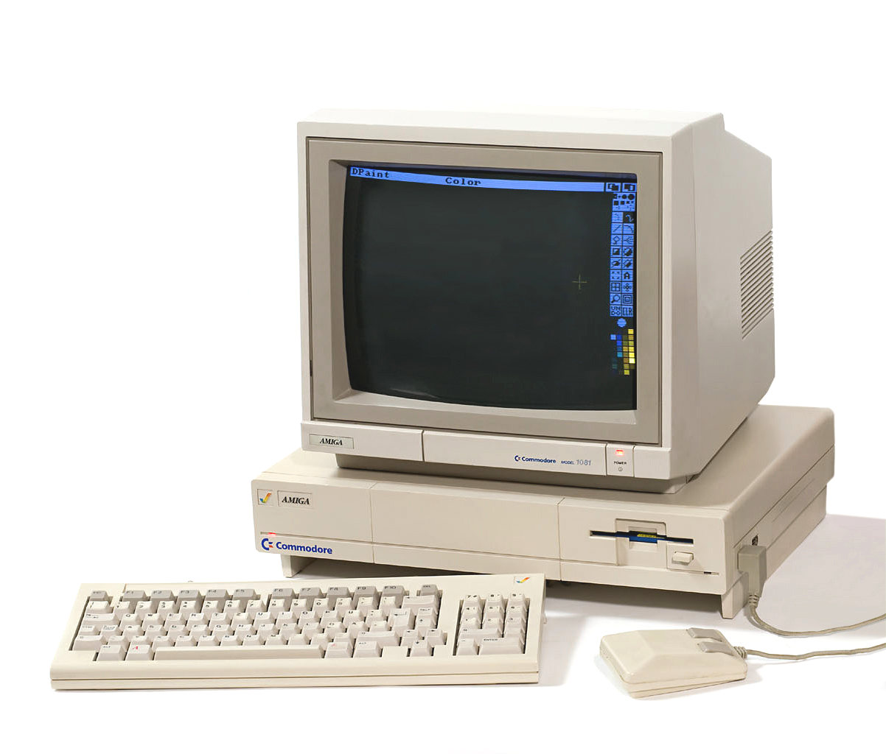
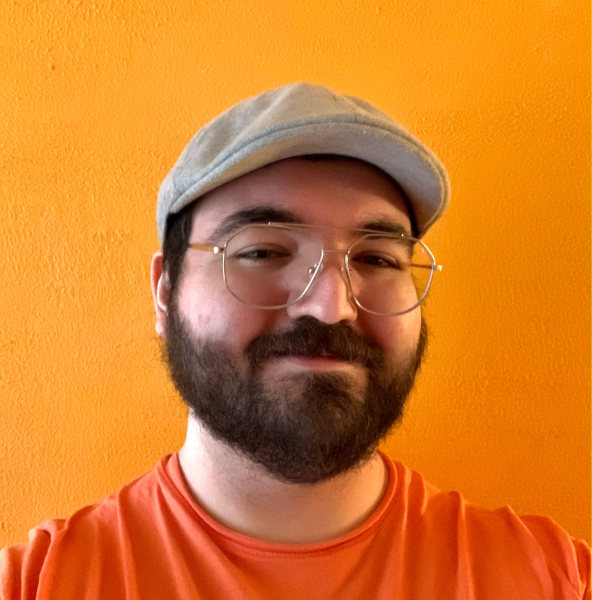

Welkom op Kaasiand.cool!
Dit is mijn website en het thuis van mijn digitale creaties! Met de linkjes bovenin kom je op de rest van de site.
Over mij

Hallo! Ik ben Daniël. Ik maak coole dingen en hoop dat jij ze ook cool vindt. Ik hou van (ver)talen en allerlei soorten kunstzinnig gepriegel: lettertypen, twee– en driedimensionale digitale beeldende kunst, klooien aan videogames (eigen en bestaande), vertalingen, en de overlap van al deze dingen, allemaal puur met menselijke breinkracht.
Welcome to Kaasiand.cool!
This is my website, where you can find all the stuff I’ve made. You can reach the rest of the site through the links at the top.
About me
Hi! I'm Daniel*. I make cool things and hope you'll find them cool too. I like languages, translation, fonts, 2D and 3D digital art, working on my own small games and modding old existing games; all exclusively human-powered.
* My name is officially written Daniël with a diaeresis ¨ and pronounced /'da:nijɛl/ (IPA) in Dutch. In English, I think it looks and sounds better if you just use the English equivalent of the name. The diaeresis only matters to Dutch orthography, and would only cause confusion if you’re pronouncing it the English way anyway.